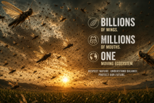

পঙ্গপালের ঝাঁক প্রতি বর্গকিলোমিটারে ৪-৮ কোটি পতঙ্গের ঘনত্বে পৌঁছাতে পারে, একদিনেই ৩৫,০০০ মানুষের খাবার সাবাড় করে দেয়, আর কয়েক ঘণ্টার মধ্যেই গোটা এলাকাকে ন্যাড়া করে ফেলে।
জীববিজ্ঞান
পঙ্গপাল আলাদা কোনো প্রজাতি নয় — এরা সাধারণ ফড়িংয়েরই আরেক রূপ। ভিড়ের মধ্যে থাকলে একটি রাসায়নিক সংকেতের প্রভাবে এদের শরীর ও আচরণে নাটকীয় বদল ঘটে এবং এরা দলবদ্ধ, ঝাঁক বাঁধা রূপ ধারণ করে।
অন্য পঙ্গপালের সংস্পর্শে এলে স্নায়ুতন্ত্রে সেরোটোনিনের মাত্রা হঠাৎ বেড়ে যায়। এই একটিমাত্র রাসায়নিক বদলই একাকী প্রাণীটিকে বদলে দেয় সামাজিক, পরিযায়ী ও ভয়ংকর ক্ষুধার্ত এক ঝাঁকবদ্ধ পতঙ্গে।
পঙ্গপালের ঝাঁক অসাধারণ দক্ষতায় বায়ুপ্রবাহের সাহায্যে ভেসে চলে, প্রায়ই ঘণ্টায় ১৫-২০ কিলোমিটার বেগে। এরা অনুসরণ করে আন্তঃক্রান্তীয় অভিসরণ অঞ্চল — যে বৃষ্টিবলয় তাদের সামনে নতুন সবুজ তৈরি করে দেয়।
পঙ্গপাল ঘাস, পাতা, ছাল, ফুল, বীজ আর ফসল — সবকিছুই নির্বিচারে খেয়ে ফেলে। উড়ন্ত অবস্থাতেও ঝাঁক খেতে থাকে। মাটিতে নামলে কয়েক মিনিটেই একটি জমির সব গাছ ন্যাড়া ডাঁটায় পরিণত করে দিতে পারে।
একটি স্ত্রী পঙ্গপাল প্রতিবার ৮০-১৬০টি ডিম পাড়ে, তার সংক্ষিপ্ত জীবনে সর্বোচ্চ ৩ বার। অনুকূল পরিবেশে — উষ্ণ মাটি ও পর্যাপ্ত বৃষ্টি থাকলে — মাত্র তিন মাসেই পঙ্গপালের সংখ্যা ২০ গুণ বেড়ে যেতে পারে।
একাকী দশায় পঙ্গপাল সবুজ বা বাদামি রঙের হয় — ছদ্মবেশে ঢাকা। দলবদ্ধ দশায় এরা উজ্জ্বল হলুদ-কালো রং ধারণ করে, যা গাছপালা থেকে জমা করা বিষাক্ত উপাদানের ইঙ্গিত দেয়। রং যত উজ্জ্বল, ঝাঁক তত বিপজ্জনক।
কৃষি সংকট
ধান, গম, ভুট্টা, জোয়ার, বাজরা, ডাল — সবই সমান দক্ষতায় খেয়ে ফেলে। মাসের পর মাসের পরিশ্রম কয়েক ঘণ্টায় মুছে যেতে পারে।
২০১৯-২০২১ সালের পূর্ব আফ্রিকার সংকট কেনিয়া, ইথিওপিয়া ও সোমালিয়া জুড়ে ২.৫ কোটিরও বেশি মানুষের খাদ্য সরবরাহকে হুমকির মুখে ফেলেছিল।
ইতিহাসে বহু ঝাঁক প্রকৃত দুর্ভিক্ষ ডেকে এনেছে — ১৮৭৪ সালে রকি মাউন্টেন পঙ্গপালের তাণ্ডবে আমেরিকার মধ্য-পশ্চিমাঞ্চলের প্রাথমিক কৃষক সমাজ সর্বস্বান্ত হয়ে পড়েছিল।
শুধু ফসল নয় — পঙ্গপাল চারণভূমিও ন্যাড়া করে দেয়, ফলে গবাদি পশুর খাবার থাকে না এবং গ্রামীণ সমাজের আর্থিক ক্ষতি আরও বেড়ে যায়।
ঝাঁক কোনো জাতীয় সীমান্ত মানে না। একটিমাত্র ঘটনা একসঙ্গে বারোটিরও বেশি দেশকে প্রভাবিত করতে পারে, যা আন্তর্জাতিক সাহায্য ও কৃষি ব্যবস্থাপনার ওপর প্রবল চাপ তৈরি করে।
জরুরি কীটনাশক অভিযান, আকাশপথে স্প্রে করার কাজ এবং কৃষকদের ক্ষতিপূরণ কর্মসূচিতে প্রতিটি সংকটে সরকারের কয়েকশো কোটি ডলার খরচ হতে পারে।
ইতিহাস
ইতিহাসে রেকর্ড করা সবচেয়ে বড় পঙ্গপালের ঝাঁক আমেরিকার মধ্য-পশ্চিমাঞ্চলের ৫,১০,০০০ বর্গমাইল এলাকা ঢেকে ফেলেছিল — যা ক্যালিফোর্নিয়ার চেয়েও বড়। আনুমানিক ১২.৫ লক্ষ কোটি পতঙ্গ কানাডা থেকে টেক্সাস পর্যন্ত গম, ভুট্টা ও কৃষিজমির ফসল খেয়ে ফেলেছিল, যার ক্ষতির পরিমাণ ছিল কয়েকশো কোটি ডলারের সমান। ১৯০২ সালের মধ্যে এই প্রজাতিটিই বিলুপ্ত হয়ে যায়।
প্রজাতিটি এখন বিলুপ্তপ্রথম বিশ্বযুদ্ধের সময় এক ভয়াবহ ঝাঁক প্যালেস্তাইন, সিরিয়া ও লেবাননের ফসল ধ্বংস করে দেয়, যা প্রায় ২,০০,০০০ মানুষের মৃত্যু ঘটানো এক দুর্ভিক্ষের অন্যতম কারণ হয়ে ওঠে — সেই অঞ্চলে যুদ্ধকালীন খাদ্যাভাবকে আরও তীব্র করে তোলে।
দুর্ভিক্ষের ঘটনাবিংশ শতাব্দীর অন্যতম ভয়াবহ এই সংকট পশ্চিম আফ্রিকা, উত্তর আফ্রিকা এবং মধ্যপ্রাচ্য জুড়ে ছড়িয়ে পড়েছিল। ২৫০ কোটিরও বেশি হেক্টর জমি হুমকির মুখে পড়ে। ৩০ কোটি ডলারেরও বেশি খরচের এক বহুজাতিক আকাশপথ স্প্রে অভিযান শেষপর্যন্ত পরিস্থিতি নিয়ন্ত্রণে আনে।
নিয়ন্ত্রণ খরচ ৩০ কোটি ডলারজলবায়ু পরিবর্তনজনিত ঘূর্ণিঝড় আরব উপদ্বীপ ও হর্ন অফ আফ্রিকা জুড়ে ডিম পাড়ার আদর্শ পরিবেশ তৈরি করে দেয়। ঝাঁক ছড়িয়ে পড়ে পাকিস্তান, ভারত, ইরান এবং আফ্রিকার ২৩টি দেশে। জাতিসংঘের FAO একে কিছু দেশের জন্য গত ৭০ বছরের সবচেয়ে ভয়াবহ সংকট বলে অভিহিত করে। ২.৫ কোটিরও বেশি মানুষ খাদ্য অনিশ্চয়তার সম্মুখীন হয়।
২.৫ কোটি+ মানুষ ক্ষতিগ্রস্তঅর্থনীতি
বাজারের আকার
সরাসরি নিয়ন্ত্রণ খরচের বাইরেও, সাধারণ বছরগুলিতে পঙ্গপাল বার্ষিক আনুমানিক ১৫০-৩০০ কোটি ডলারের ফসলহানি ঘটায় — বড় সংকটের সময় যা বেড়ে দাঁড়ায় ৮০০-১২০০ কোটি ডলারে। পঙ্গপাল সমস্যার অর্থনৈতিক পরিধি বিশাল।
প্রতিবেশবিজ্ঞান
বিধ্বংসী ফসলহানি ও তার জেরে হওয়া দুর্ভিক্ষ চিরতরে দূর হয়ে যেত, যা সরাসরি কোটি কোটি মানুষের খাদ্য নিরাপত্তা রক্ষা করত।
প্রতিটি সংকটের চক্রে জরুরি কীটনাশক, আকাশপথে স্প্রে ও কৃষি সহায়তায় খরচ হওয়া কোটি কোটি ডলার বেঁচে যেত।
বিশাল এলাকা জুড়ে কীটনাশক স্প্রে কমে যাওয়ায় প্রতিবেশতন্ত্র, বন্যপ্রাণী ও কৃষক সমাজের ওপর রাসায়নিকের প্রভাব কমত।
আফ্রিকা, দক্ষিণ এশিয়া ও মধ্যপ্রাচ্যের ক্ষুদ্র কৃষকরা — যারা সবচেয়ে ঝুঁকিপূর্ণ — বেশি আর্থিক স্থিতিশীলতা ও খাদ্য নিরাপত্তা পেতেন।
বিশ্বব্যাপী খাদ্যশস্য ও খাদ্যপণ্যের বাজারে পঙ্গপাল-জনিত সরবরাহ ধাক্কা থেকে মূল্যের অস্থিরতা কমত।
শুকনো ও অর্ধ-শুকনো প্রতিবেশতন্ত্রে বিশেষত পঙ্গপাল শত শত প্রজাতির পাখি, টিকটিকি, ব্যাঙ, সাপ, মাকড়সা ও ছোট স্তন্যপায়ী প্রাণীর গুরুত্বপূর্ণ খাদ্যের উৎস।
মৃত পঙ্গপাল মাটিতে মিশে গিয়ে নাইট্রোজেন ও জৈব পদার্থ ফিরিয়ে দেয়, যা বিশ্বের সবচেয়ে শুষ্ক অঞ্চলগুলির ক্ষয়প্রাপ্ত জমিকে উর্বর করে তোলে।
আফ্রিকা, মধ্যপ্রাচ্য ও এশিয়ার বহু সংস্কৃতিতে পঙ্গপাল উচ্চ-প্রোটিনযুক্ত এক ঐতিহ্যবাহী খাদ্য। এদের বিলুপ্তি দরিদ্র সমাজের বিনামূল্যের পুষ্টি উৎস কেড়ে নিত।
কিছু ক্ষেত্রে পঙ্গপালের ঝাঁকের চারণ ঘন গাছপালা পরিষ্কার করে তৃণভূমি বাস্তুতন্ত্রে নতুন পুনর্জন্মের চক্র শুরু করতে পারে।
যেকোনো বিলুপ্তির মতোই, একটি প্রজাতিকে সরিয়ে দিলে তৈরি হয় এক প্রতিবেশগত শূন্যতা, যা প্রায়ই অনিশ্চিতভাবে পূরণ হয় — কখনো কখনো আরও ক্ষতিকর কিছু দিয়ে।
অন্য দিকটিও দেখা যাক
ঝাঁক অসংখ্য পাখিকে আকৃষ্ট করে — মৌমাছি-ভুক, সারস, চিল ও শিকারি পাখিরা মহাদেশজুড়ে এদের অনুসরণ করে সহজ শিকারে ভোজ সারে। একটিমাত্র সংকট মাসের পর মাস বন্যপ্রাণীর জনসংখ্যা টিকিয়ে রাখতে পারে।
মৃত ও পচনশীল পঙ্গপাল সরাসরি মাটিতে উচ্চ-নাইট্রোজেনযুক্ত জৈববস্তু যোগ করে। কিছু শুষ্ক অঞ্চলে ঝাঁক চলে যাওয়ার পরের বছরগুলিতে মাটির উর্বরতা ও গাছপালার বৃদ্ধিতে লক্ষণীয় বৃদ্ধি দেখা যায়।
৩০টিরও বেশি দেশে পঙ্গপাল খাওয়া হয়। শুকনো ওজনের ৬০-৭৫% এতে প্রোটিন থাকে, আর থাকে প্রচুর আয়রন ও জিঙ্ক। পূর্ব আফ্রিকায় ঝাঁক এলে ভাজা পঙ্গপাল সংগ্রহ করে বিক্রি করা হয় — কিছু সমাজের জন্য এ যেন এক সুবর্ণ সুযোগ।
পঙ্গপালের রূপান্তর — প্রাণীজগতের অন্যতম নাটকীয় আচরণগত পরিবর্তন — স্নায়ুবিজ্ঞান, জনতার আচরণ, এমনকি শহুরে ট্রাফিক মডেলিংয়েও বড় বড় আবিষ্কারের পথ দেখিয়েছে।
আপনি কি জানেন?
বাইবেলে মিশরের দশটি অভিশাপের একটি হলো পঙ্গপাল, আর কোরানেও এদের উল্লেখ পাওয়া যায়। প্রাচীন মেসোপটেমীয়, চৈনিক ও ভারতীয় গ্রন্থে এরা ঐশ্বরিক শাস্তির প্রতীক হিসেবে এসেছে — আবার কিছু ঐতিহ্যে এদের বৈধ খাদ্যও বলা হয়েছে।
পঙ্গপালের ঝাঁকের নিজে-নিজে সংগঠিত চলাফেরা — কোনো নেতা ছাড়াই লক্ষ লক্ষ প্রাণী একসঙ্গে একটি সত্তার মতো চলা — সরাসরি অনুপ্রাণিত করেছে সেইসব গাণিতিক মডেলকে, যা আজ ট্রাফিক ইঞ্জিনিয়ারিং, জনতা ব্যবস্থাপনা এবং স্বয়ংক্রিয় গাড়ি চলাচলে ব্যবহৃত হয়।
খাদ্যের অভাব হলে পঙ্গপাল একে অপরকে খেয়ে ফেলে। শিশু পঙ্গপালের দল বেঁধে হাঁটার আচরণ অনেকটাই এই কারণে — প্রতিটি পঙ্গপাল সামনেরটিকে খাওয়ার চেষ্টা করে, আর পিছনেরটির হাত থেকে বাঁচার চেষ্টা করে। মূলত এই ঝাঁক একধরনের পদদলনেরই রূপ।
একসময় উত্তর আমেরিকার সবচেয়ে বেশি সংখ্যায় থাকা পতঙ্গ রকি মাউন্টেন পঙ্গপাল ১৯০২ সালের মধ্যে বিলুপ্ত হয়ে যায় — সম্ভবত বসতি স্থাপনকারীরা যে নদী উপত্যকায় এরা ডিম পাড়ত, তা চাষ করার ফলেই এই বিলুপ্তি ঘটে। পৃথিবীর জানা সবচেয়ে বড় ঝাঁকটি আজ চিরতরে হারিয়ে গেছে।
ভারত মহাসাগরের উষ্ণতা বৃদ্ধি আরব উপদ্বীপে বেশি ঘূর্ণিঝড় তৈরি করছে, যা ডিম পাড়ার আদর্শ পরিবেশ গড়ে তুলছে। বিজ্ঞানীদের পূর্বাভাস, বিশ্ব উষ্ণায়নের সঙ্গে সঙ্গে ২০৫০ সালের মধ্যে পঙ্গপালের সংকটের সংখ্যা ও তীব্রতা উল্লেখযোগ্যভাবে বাড়বে।
পঙ্গপাল ও চিংড়ি দুটোই সন্ধিপদী প্রাণী, রান্না করলে এদের স্বাদও আশ্চর্যরকম মিলে যায়। পূর্ব আফ্রিকা ও মধ্যপ্রাচ্যে এদের ভেজে, সেঁকে অথবা শুকিয়ে গুঁড়ো করে খাওয়া হয়। ইউরোপের শেফরাও এখন এদের বিশেষ পদের মেনুতে যোগ করছেন।
FAO-র মরু পঙ্গপাল তথ্য পরিষেবা উপগ্রহের গাছপালা সংক্রান্ত তথ্য, আবহাওয়া মডেল এবং ৩০টি দেশের মাঠপর্যায়ের রিপোর্ট ব্যবহার করে ঝাঁক তৈরি হওয়ার ওপর নজর রাখে — দূরবর্তী প্রজনন অঞ্চলে নতুন ঝাঁক তৈরি হলে বিশ্বব্যাপী সতর্কতা জারি করে।
২০০৯ সালে বিজ্ঞানীরা আবিষ্কার করেন, একটি ফড়িংয়ের শরীরে সেরোটোনিন প্রবেশ করালে তার সম্পূর্ণ দলবদ্ধ রূপান্তর ঘটে যায় — রং বদল, ক্ষুধা বৃদ্ধি এবং সামাজিক আচরণ। এটি সেই একই স্নায়ু-রাসায়নিক, যা মানুষের মেজাজ, ক্ষুধা ও সামাজিক আচরণের সঙ্গেও জড়িত।
খাদ্যশৃঙ্খল
মৌমাছি-ভুক, সারস, চিল ও শিকারি পাখিরা মহাদেশ জুড়ে ঝাঁক অনুসরণ করে
তৃণভূমি দিয়ে শিশু পঙ্গপালের দল হেঁটে গেলে মাটিতে থাকা সাপেরা পেট ভরে খায়
আফ্রিকা ও এশিয়ায় পঙ্গপালের সংকটের সময় গোসাপ ও অ্যাগামা টিকটিকিরা প্রচুর খেয়ে নেয়
জলাভূমির কাছের উভচর প্রাণীরা পঙ্গপালের সংখ্যা বৃদ্ধি থেকে প্রচুর উপকৃত হয়
বড় জাল-বোনা ও নেকড়ে মাকড়সারা সুযোগ পেলেই পঙ্গপাল খায়
আফ্রিকা ও আরবের মরু শিয়ালরা মরসুমি প্রোটিনের জোগান হিসেবে পঙ্গপালের ওপর নির্ভর করে
বেবুন ও বানরেরা উচ্চ-শক্তিসম্পন্ন খাবারের সন্ধানে সক্রিয়ভাবে পঙ্গপালের ঝাঁক খুঁজে বের করে
৩০টিরও বেশি দেশে খাওয়া হয় — সেঁকা, ভাজা বা শুকনো অবস্থায়; শুকনো ওজনের ৭০% প্রোটিন
প্রতিটি পঙ্গপালের ঝাঁক অনুসরণকারী শিকারিদের জন্য প্রাচুর্যের এক ধারাবাহিক প্রবাহ তৈরি করে।
আঞ্চলিক ইতিহাস
ভারতের নথিভুক্ত ইতিহাসের অন্যতম ভয়াবহ পঙ্গপাল সংকট টানা পাঁচ বছর ধরে পাঞ্জাব, সিন্ধু, রাজস্থান ও যুক্তপ্রদেশ জুড়ে ছড়িয়ে পড়েছিল। বিশাল ঝাঁক গম ও তুলার ফসল ধ্বংস করে দেয়, ব্রিটিশ ভারতের বহু অংশে তীব্র খাদ্যাভাব দেখা দেয়। এর প্রতিক্রিয়ায় ঔপনিবেশিক প্রশাসন উপমহাদেশে প্রথম সুসংগঠিত আকাশপথ স্প্রে অভিযানের একটি শুরু করে।
টানা ৫ বছরের সংকটপাকিস্তান ও ইরানের প্রজনন ক্ষেত্র থেকে বিপুল সংখ্যায় মরু পঙ্গপাল রাজস্থানে ঢুকে পড়ে, বারমের, জয়সলমীর, যোধপুর ও বিকানের জেলার ফসল নষ্ট করে দেয়। হাজার হাজার হেক্টর বাজরা, সরষে ও গুয়ার ফসল ক্ষতিগ্রস্ত হয়। পূর্বদিকে ছড়িয়ে পড়ার আগেই সংকট আটকাতে ভারতীয় প্রশাসন সীমান্ত জেলাগুলিতে আকাশ ও স্থলপথে স্প্রে অভিযান চালায়।
সীমান্ত জেলাগুলি সবচেয়ে বেশি ক্ষতিগ্রস্তপ্রায় ৩০ বছরের মধ্যে ভারতের সবচেয়ে বড় পঙ্গপাল আক্রমণ ঘটে ২০২০ সালের গ্রীষ্মে, ঠিক কোভিড-১৯ লকডাউনের সময়ে। পাকিস্তান থেকে আসা ঝাঁক রাজস্থান, মধ্যপ্রদেশ, উত্তরপ্রদেশ ও গুজরাটে ঢুকে পড়ে — এক পর্যায়ে দিল্লির উপকণ্ঠেও হুমকি তৈরি করে। একইসঙ্গে পাকিস্তানও জাতীয় জরুরি অবস্থা ঘোষণা করে, কারণ সিন্ধু ও পাঞ্জাবে পঙ্গপালের ঝাঁক ফসল ধ্বংস করে দিচ্ছিল। ভারত ২০০-রও বেশি স্প্রে দল মোতায়েন করে এবং পঙ্গপাল নিয়ন্ত্রণে প্রথমবার ড্রোন ব্যবহার করে। আনুমানিক ফসলহানির পরিমাণ ছিল হাজার হাজার কোটি টাকা।
পাকিস্তানে জাতীয় জরুরি অবস্থা · ভারতে প্রথম ড্রোন নিয়ন্ত্রণ ব্যবহারজলবায়ু বিজ্ঞান
সমুদ্রের উপরিভাগের তাপমাত্রা বাড়ার ফলে আরব সাগরে ঘন ঘন এবং আরও তীব্র ঘূর্ণিঝড় তৈরি হচ্ছে।
ঘূর্ণিঝড় আরব উপদ্বীপের অভ্যন্তরীণ মরু অঞ্চলে অস্বাভাবিক পরিমাণ বৃষ্টি ঢেলে দেয় — যে এলাকাগুলি সাধারণত একেবারে শুকনো থাকে।
প্রবল বৃষ্টি ধু ধু বালিকে সাময়িকভাবে সবুজে পরিণত করে — যা পঙ্গপালের জন্য আদর্শ প্রজননস্থল, কারণ ডিম পাড়তে এদের ভেজা মাটি দরকার।
প্রচুর খাবার ও ভেজা মাটির সুবাদে পঙ্গপালের সংখ্যা কয়েক মাসের মধ্যেই ২০ গুণ বেড়ে যায়, তারপর বাতাস এদের বয়ে নিয়ে যায় আফ্রিকা ও দক্ষিণ এশিয়ার দিকে।
ঝাঁক পূর্ব আফ্রিকা, দক্ষিণ এশিয়া ও মধ্যপ্রাচ্যের কৃষিজমিতে পৌঁছায় — কোটি কোটি মানুষের খাদ্য নিরাপত্তাকে হুমকির মুখে ফেলে।
অগ্রণী সমাধান
মেশিন লার্নিং ব্যবস্থা উপগ্রহের গাছপালা সংক্রান্ত সূচক ও মাটির আর্দ্রতার তথ্য বিশ্লেষণ করে ঝাঁক তৈরি হওয়ার কয়েক সপ্তাহ আগেই প্রজননস্থল চিহ্নিত করতে পারে — যা সরকারকে গুরুত্বপূর্ণ আগাম সতর্কতার সময় দেয়।
স্বয়ংক্রিয় ড্রোনের বহর গাড়ি বা বিমানের অগম্য দুর্গম এলাকায় পৌঁছে নিখুঁত নিশানায় জৈব-কীটনাশক প্রয়োগ করতে পারে, আশেপাশের প্রতিবেশতন্ত্রের ন্যূনতম ক্ষতি করে।
FAO-র মরু পঙ্গপাল তথ্য পরিষেবা এখন ৭০ বছরেরও বেশি সময়ের সংকট তথ্য, আবহাওয়ার ধরন এবং গাছপালার মানচিত্রে প্রশিক্ষিত AI মডেল ব্যবহার করে ঝাঁকের গতিপথের ১০ দিন আগে পর্যন্ত পূর্বাভাস দিতে পারে।
মেটারাইজিয়াম অ্যাক্রিডাম (গ্রিন মাসল) নামের প্রাকৃতিক ছত্রাক-জাত জৈব-কীটনাশক পাখি, স্তন্যপায়ী প্রাণী বা উপকারী পতঙ্গের ক্ষতি না করেই পঙ্গপাল ধ্বংস করে। এটি এখন আফ্রিকা ও মধ্য এশিয়া জুড়ে ব্যবহৃত হচ্ছে।
FAO-র eLocust3m-এর মতো মোবাইল প্ল্যাটফর্মে মাঠকর্মী ও কৃষকরা GPS-ট্যাগ করা ছবির মাধ্যমে তাৎক্ষণিকভাবে পঙ্গপাল দেখা যাওয়ার খবর জানাতে পারেন, যা সরাসরি বিশ্বব্যাপী সংকট মানচিত্রে যুক্ত হয়ে যায় এবং সাড়াদানকারী দলগুলির কাজে লাগে।
CLCPRO (আফ্রিকা) ও SWAC-এর মতো আঞ্চলিক সংস্থাগুলি যৌথ দ্রুত-সাড়াদান পদ্ধতি গড়ে তুলছে — যৌথ বিমানবহর, কীটনাশকের মজুত এবং সমন্বিত পরিচালন ব্যবস্থা — যাতে কূটনৈতিক বিলম্বে হারানো দিনগুলি এড়ানো যায়।
ভবিষ্যতের খাদ্য
পৃথিবীর সবচেয়ে প্রোটিন-সমৃদ্ধ খাদ্যগুলির একটি পঙ্গপাল — গরুর মাংসের সমতুল্য, অথচ উৎপাদনে লাগে জমি, জল ও খাবারের সামান্যই অংশ।
পূর্ব আফ্রিকার সেঁকা পঙ্গপাল থেকে শুরু করে থাইল্যান্ড, মেক্সিকো ও মধ্যপ্রাচ্যের ভাজা পঙ্গপাল পর্যন্ত — এটা নতুন কোনো ধারণা নয়। বরং এক ঐতিহ্যবাহী খাদ্যের নতুন করে আবিষ্কার।
১ কেজি পঙ্গপাল প্রোটিন তৈরি করতে গরুর মাংসের চেয়ে ১২ গুণ কম খাবার লাগে, গ্রিনহাউস গ্যাসও তৈরি হয় অনেক কম, আর জল লাগে সামান্য — যা একে পৃথিবীর অন্যতম টেকসই প্রোটিন উৎসে পরিণত করেছে।
বিশ্বব্যাপী ভোজ্য পতঙ্গের বাজার ২০৩০ সালের মধ্যে ১৪০ কোটি ডলারে পৌঁছাবে বলে অনুমান করা হচ্ছে। নেদারল্যান্ডস, যুক্তরাজ্য ও কেনিয়ার সংস্থাগুলি ইতিমধ্যেই খাদ্য ও পশুখাদ্যের জন্য বাণিজ্যিকভাবে পঙ্গপাল চাষ করছে।
সংকটের সময় বুনো পঙ্গপাল আকাশপথে স্প্রে করা কীটনাশকে দূষিত থাকে — ফলে সংকটকালে সংগ্রহ করা পঙ্গপাল খাওয়া নিরাপদ নয়। বাণিজ্যিক চাষ খাদ্যের উৎসকে পতঙ্গ-সংকট সমস্যা থেকে আলাদা রাখে।